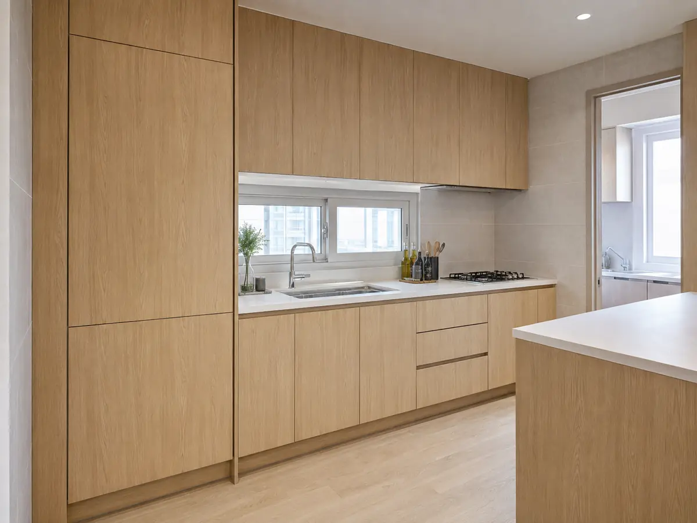
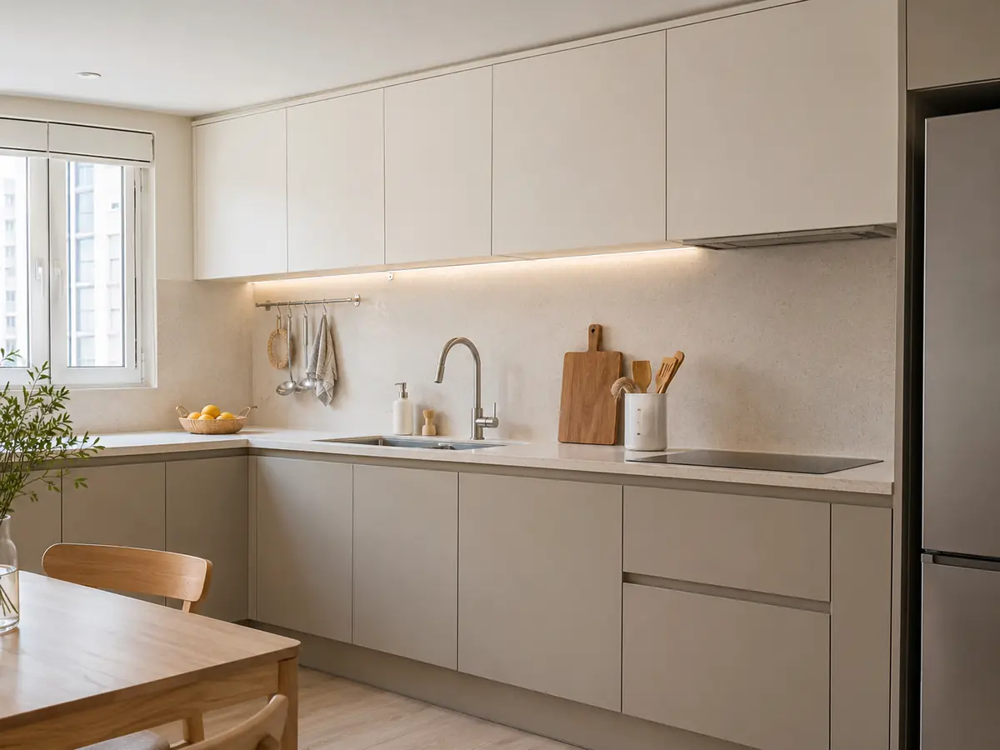
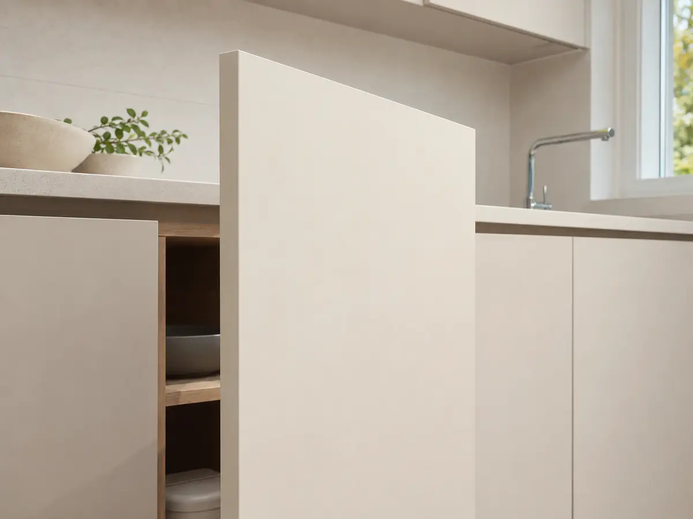
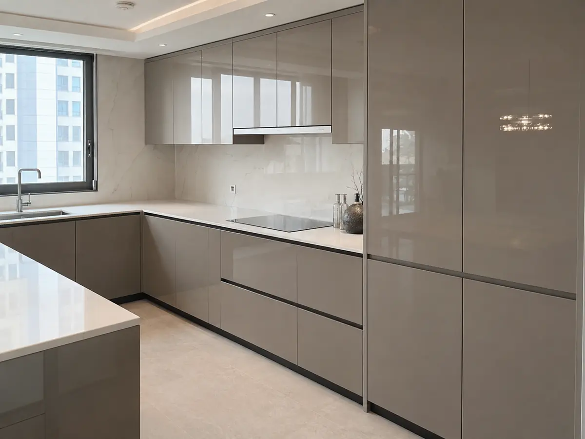
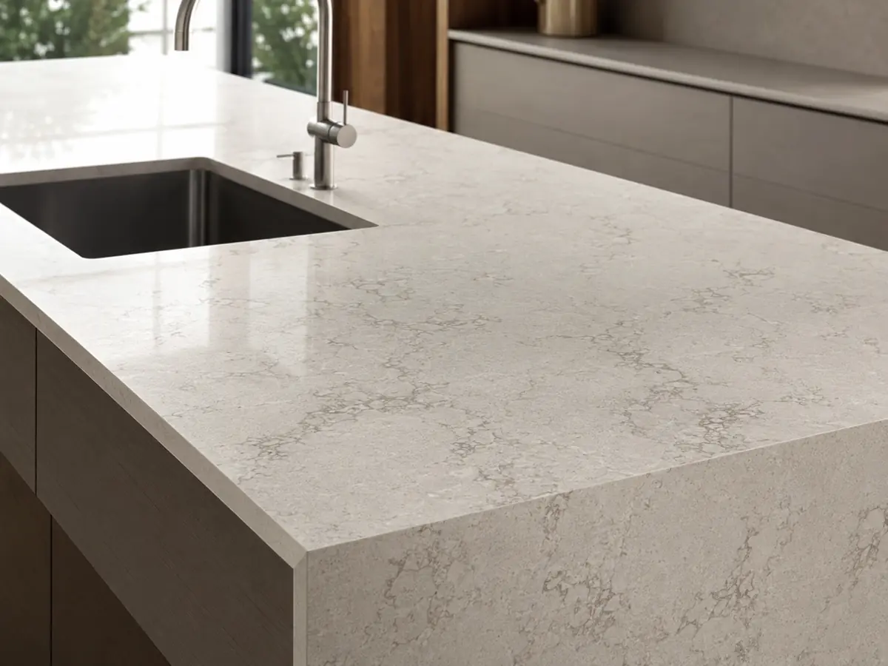

LPM (저압 멤브레인)
주방 가구 표준
PVC 필름을 입힌 가장 대중적인 도어입니다. 색상·패턴이 다양하고 합리적이지만, 열과 습기에는 변형이 생길 수 있습니다.
- 표면
- PVC 필름
- 내구
- 7~10년

주방은 도어재(청소·내구·예산), 상판(열·산성·이음새), 빌트인(전기 용량·환기) 세 축으로 고릅니다. 매일 쓰는 공간인 만큼 겉모습보다 하드웨어와 전기 조건을 먼저 챙기세요.
도어재는 청소·내구·예산, 상판은 열·산성·이음새, 빌트인은 전기 용량과 환기로 정리하세요. 특히 인덕션은 전용 220V 회로가 필요하고, 상판은 무이음 가능 길이(보통 3.6m) 제약이 있어 배치 단계에서 확인해야 합니다.
도어는 매일 손이 닿는 부분입니다. 표면 재질에 따라 청소·내구·보수 난도가 갈립니다. 사진과 함께 비교하세요.

PVC 필름을 입힌 가장 대중적인 도어입니다. 색상·패턴이 다양하고 합리적이지만, 열과 습기에는 변형이 생길 수 있습니다.

PET 라미네이트를 입혀 스크래치에 강하고 청소가 쉽습니다. 유리 같은 광택이 특징이라 호불호가 갈릴 수 있습니다.

원하는 색으로 도장해 매끈한 표면을 냅니다. 표현 자유도가 높은 대신 충격에 칠이 벗겨지면 보수가 어렵습니다.
상판은 열·칼자국·산성·이음새에서 성격이 갈립니다. 보수 가능성과 이음새 노출을 함께 보세요.


| 재질 | 가격대 | 장점 | 단점 |
|---|---|---|---|
| 인조대리석 (PMMA) | 30~60만원/m | 이음새 매끈, 보수 가능 | 열·칼자국에 약함 |
| 엔지니어드스톤 (쿼츠) | 60~120만원/m | 내열·내스크래치, 강도↑ | 이음새 보임, 보수 어려움 |
| 천연 대리석 | 120~250만원/m | 유니크한 무늬 | 흡수성↑, 산성에 약함 |
| 스테인리스 | 50~100만원/m | 위생·열에 강함 | 스크래치 누적 |
| 세라믹 (포세린) | 100~200만원/m | 내화·내열·자외선 강함 | 충격에 깨짐 |
← 표는 좌우로 넘겨 볼 수 있어요
작업 삼각형(싱크-가스-냉장고)이 자연스러운지가 동선의 핵심입니다.
빌트인 가전은 전기 용량과 환기가 관건입니다. 배치 도면 단계에서 회로·콘센트를 확정하세요.
브랜드 견적을 비교할 땐 상판·도어·하드웨어 사양을 같게 맞춘 뒤 가격을 비교해야 의미가 있습니다.
| 항목 | 선택지 | 보는 법 |
|---|---|---|
| 상판 | PT(LPM) · 인조대리석 · 엔지니어드스톤 · 세라믹 | 체감 품질을 가장 좌우 — 스크래치·열·오염 저항 확인 |
| 도어 | 필름·PET · 도장(우레탄) | PET는 지문 억제·청소 용이, 도장은 색감·보수 용이 |
| 하드웨어 | 국산 힌지·레일 · 블룸·헤티히 등 | 매일 여닫는 부품 — 댐핑 힌지·언더레일 명시 요구 |
| 몸통(바디) | PB(E0) / 방수 PB | 싱크대 하부는 방수 자재 여부 확인 |
| 배치·치수 | ㄱ자 / ㄷ자 / 11자 + 아일랜드 | 실측 도면 첨부 — 콘센트·수전 위치 포함 |
| 빌트인 가전 | 후드·쿡탑·식기세척기 규격 | 매립 규격(빌트인 홀) 호환을 견적 단계에서 확정 |
← 표는 좌우로 넘겨 볼 수 있어요
브랜드 견적을 비교할 땐 상판·도어·하드웨어 사양을 같게 맞춘 뒤 가격을 비교해야 의미가 있습니다.
| 브랜드 | 주요 강점·제품군 | 검토 시 살펴볼 점 |
|---|---|---|
| 한샘 | 표준화된 시공·AS · 전국 대리점망 | 상판·하드웨어 사양별 견적 분리 확인 |
| 현대리바트 | 디자인 라인업 · 현대 계열 | 거실과 톤 매칭 시 자재 사양 확인 |
| 에넥스 | 특판(아파트 빌트인) 실적 다수 | 구성 항목·하드웨어 브랜드 확인 |
| 이케아 | 모듈 조합·셀프 설계 · 프레임 보증 | 직접 설계·부분 시공 가능 여부 확인 |
| 사제(공장 주방) | 자재 스펙을 직접 지정 가능 | 상판·도어·하드웨어 사양을 반드시 명시 |
매일 여닫는 힌지·레일 등 하드웨어 브랜드까지 견적서에 명시하도록 요청하세요.
이음새가 매끈하고 보수가 되는 것이 중요하면 인조대리석, 열·스크래치에 강한 내구가 중요하면 엔지니어드스톤(쿼츠)이 유리합니다. 다만 쿼츠는 이음새가 보이고 보수가 어렵습니다.
인덕션은 220V 전용 회로가 필요합니다. 3구 8kW급은 30A 차단기가 권장되며, 식기세척기·오븐까지 추가하면 분전반 증설이 필요할 수 있으니 배치 도면 단계에서 전기 용량을 확인하세요.
가격만 보면 안 되고, 상판·도어·하드웨어·바디 사양을 같게 맞춘 뒤 비교해야 합니다. 사제는 자재를 직접 지정할 수 있는 대신, 하드웨어와 상판 사양을 명시적으로 요구해야 합니다.
인조대리석은 무이음 가공이 가능하지만 길이 제약(보통 3.6m 내외)이 있습니다. 그보다 길면 이음이 생기므로 배치 단계에서 확인하세요.